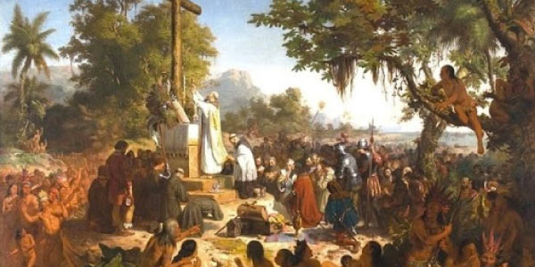
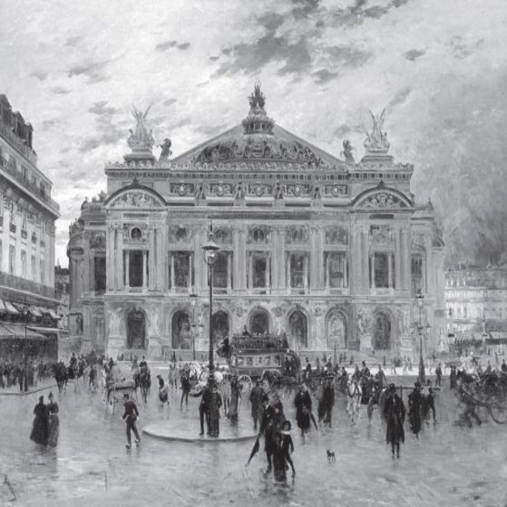

pintura da primeira missa no território brasileiro
Teatro Colonial (séculos XVI - XVIII):
O teatro no Brasil tem suas origens ligadas à colonização portuguesa, com peças religiosas encenadas nas missas e festividades. Era basicamente um teatro de caráter catequético, com a Igreja como principal patrocinadora.
A primeira peça teatral brasileira registrada foi a "Auto da Visitação", de 1565, de autoria de José de Anchieta.
Ao longo do período colonial, o teatro era restrito às elites, e as representações eram mais voltadas para a moralidade cristã.
Teatro do século XIX (Romantismo):
Com a Independência do Brasil e o Império, o teatro passou a se profissionalizar, e o romantismo influenciou as produções. Durante este período, o teatro tornou-se uma importante forma de expressão cultural.
José de Alencar, autor de peças como O Guarani, e Machado de Assis, com sua comédia social, marcaram o teatro dessa época.
O teatro passou a se concentrar na exaltação dos valores nacionais, como o herói nacional e a identidade brasileira, com o objetivo de fortalecer o sentimento de nacionalismo.

fotografia do teatro municipal do Rio de Janeiro
Teatro no final do século XIX e início do século XX (Realismo e Modernismo):
No final do século XIX, o teatro no Brasil começou a se aproximar das correntes realistas e naturalistas, com dramaturgos como Artur Azevedo e Alfredo de Freitas abordando questões sociais e políticas.
Com o Modernismo (na década de 1920), o teatro brasileiro passou por uma revolução, rompendo com as formas tradicionais e buscando uma linguagem mais autêntica e popular. O Teatro de Revista e o Teatro Modernista surgiram com autores como Oswald de Andrade e Mário de Andrade.
Teatro de Resistência (Décadas de 1930 - 1940):
Durante o período Getúlio Vargas e a ditadura do Estado Novo (1937-1945), o teatro foi usado como forma de resistência política, e surgiram importantes peças de crítica social.
A Comédia Paulista e o Teatro de Repertório se consolidaram como formas de engajamento cultural e político.
Nelson Rodrigues, um dos maiores dramaturgos do Brasil, se destacou com obras que abordavam o drama familiar e as questões sociais, como Vestido de Noiva.
Teatro Pós-1964 (Ditadura Militar e Teatro Político):
Com o golpe militar de 1964, o teatro no Brasil tornou-se uma ferramenta importante de resistência à repressão. Surgiram peças que abordavam a censura, a tortura e os abusos do regime.
O Teatro de Arena, em São Paulo, e o Teatro Oficina, em São Paulo e no Rio de Janeiro, se destacaram por sua experimentação e engajamento político.
Augusto Boal, com seu Teatro do Oprimido, foi um dos maiores nomes desse período, desenvolvendo técnicas de teatro interativo para promover a conscientização social e política.
Teatro nos anos 1980
A partir dos anos 1980, o teatro brasileiro se diversificou ainda mais, incorporando novas linguagens e influências globais, como o teatro experimental, o teatro físico e a performance.
Surgiram grupos e companhias que buscaram novas formas de encenação e experimentação, como o Teatro de Grupo, que colaborava com coletivos artísticos e culturais.
As questões sociais continuam a ser centrais no teatro brasileiro, com temas como identidade, diversidade, racismo e desigualdade.
O teatro no Brasil reflete não apenas uma evolução artística, mas também as mudanças e lutas sociais e políticas do país, servindo tanto como entretenimento quanto como ferramenta de reflexão e resistência. Ele segue se renovando, mantendo um diálogo constante com o público e a realidade brasileira.